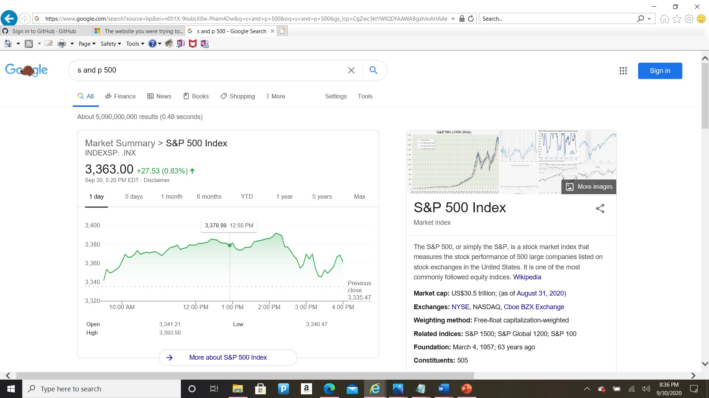

Hi class, my name is Darius Eiland. I am currently serving in the U.S. Air Force doing human resource work. I enjoy relaxing and occasionally playing video games. My hobbies include collecting sneakers, financial investing, and watching youtube. Although, I have been in the military for the past seven years, I don't plan on retiring. I am single with no kids and and I don't expect that to change anytime soon. I would like to do more traveling at some point as I also enjoy driving on the open road. Being able to afford nicer vehicles some day is definitely a goal of mine.
With a degree in programming, and IT certifications, I aspire to work in the IT career field as a Full Stack Web Developer or perhaps a DevOps (Developer Operations) Engineer. Network Admistrator and IT Support Specialists are also good careers I am exploring. The great aspect of these careers in my opinion is work autonomy giving you the freedom to work remotely and set your own hours. You can also freelance as a programmer/developer. The oppotunities for career advancement and increasing pay presents the ideal job for me to pursue.

*This is just a snippet of the shoes I own. I currently own about 92 pairs.
*Currently, I'm into passive investing. I own two brokerage accounts as well as a TSP (Thrift Savings Plan). TSP is the military's version of the 401k. Above is a screenshot of the S and P 500 index. It is one of the index funds I invest in.
Sneaker News is the website I frequent for sneaker releases. Morningstar is a good website to get information on stocks and index funds. I can spend hours watching Youtube videos.